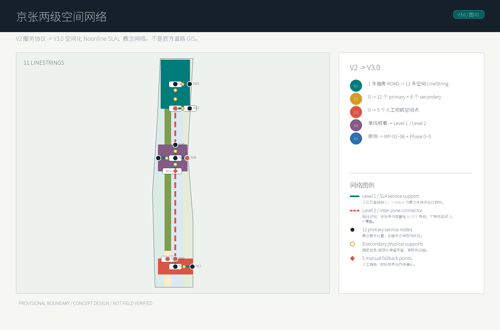
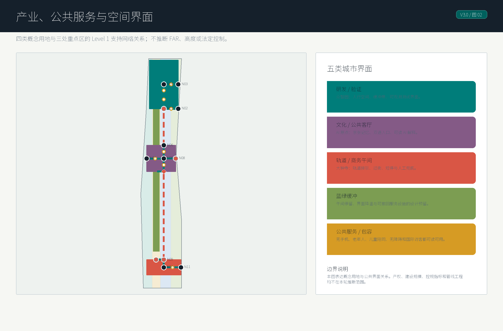
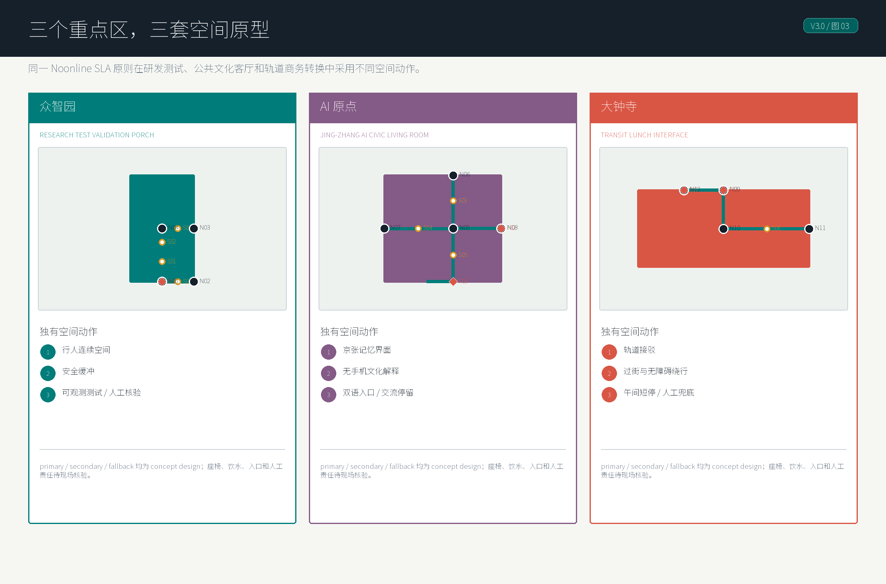
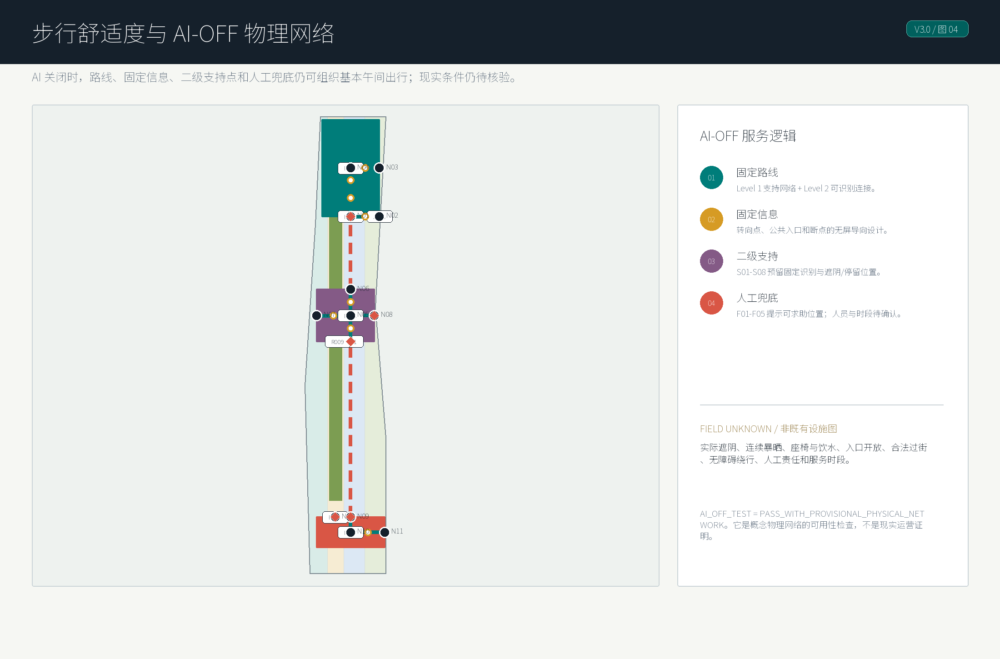
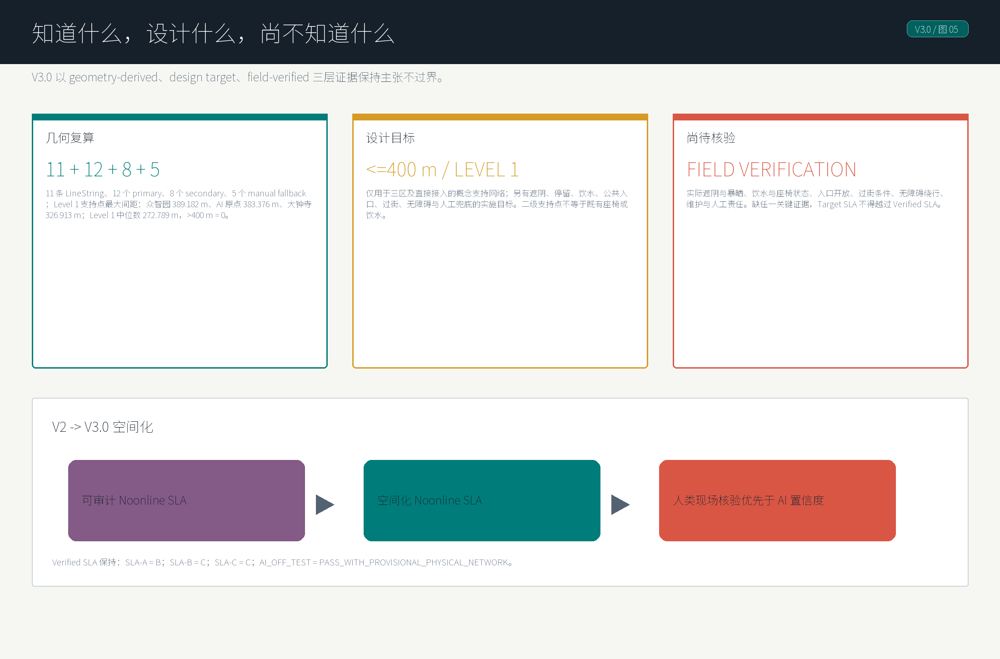

研发测试验证门廊
人行连续空间、缓冲带与可观测测试界面。
AI 不替城市工作。Noonline SLA 要求城市空间在 AI、手机和屏幕失效后仍可理解、可使用、可求助。
V2 的可审计服务协议在 V3.0 转译为 11 条 LineString、12 个主节点、8 个二级支持点和 5 个人工兜底点。


重点区域不是同一节点模板的换名。

人行连续空间、缓冲带与可观测测试界面。
记忆界面、无手机文化解释、双语入口与公共停留。
轨道接驳、商务短停、过街与人工兜底。


3 SLA types
11 条路线、12 个主节点、8 个二级支持点、5 个人工兜底点。
临时几何面积：11,412,825.386 sqm。
绿地比例：0.123423（临时几何复算）。
公共空间比例：0.073281（临时几何复算）。
<=400 m
仅限 Level 1 的概念支持点网络。
45 unknown tasks
专业核验优先于 AI 置信度；证据不足不升级主张。
来源：公开/清权资料、仓库临时几何和 V2 现场核验 workflow。假设：所有边界、路线、节点和设施状态均不得被理解为既有官方 GIS、已建设施或现实运营证明。官方 CAD/GIS 与现场核验获得后，必须复算图纸、指标和 SLA 结论。
本清单由机器可读 ledger 自动生成。全部任务当前为 unknown，不代表任何遮阴、饮水、座椅、入口、过街、绕行或人工服务已经被现场核验。
Target SLA = A；Verified SLA = B。SLA-A 的 18 项 mandatory evidence 尚未完成，因此 blocked。AI 不得写入 observed、verified 或 rejected。
| 任务 | 对象 | 所需证据 | 核验方法 | 通过 / 失败 | 状态 | SLA 影响 |
|---|---|---|---|---|---|---|
| FV-SLA-A-SHADE-CONTINUITY-SLA-A 遮阴连续性 | SLA-A · route:SLA-A | Geolocated route-segment observation at the specified midday sampling window, including shade/solar-exposure record and attachment. | Walk the declared reference axis segment; record continuous shaded and exposed intervals with timestamped, geolocated evidence. | Observed shaded coverage meets the pre-approved route threshold for the specified sampling window. / A gap beyond the approved exposure threshold is observed, or the route cannot be observed safely. | unknown | Blocks SLA-A promotion when not verified; rejection triggers route-service review. |
| FV-SLA-A-CONTINUOUS-EXPOSURE-SLA-A 连续暴晒距离 | SLA-A · route:SLA-A | Timestamped, geolocated walking survey showing the longest continuously exposed interval. | Traverse the reference segment during the approved time window and measure each uninterrupted exposure interval. | The longest exposed interval is within the pre-approved maximum. / The longest exposed interval exceeds the pre-approved maximum or no reliable measurement is available. | unknown | Blocks SLA-A promotion when not verified; rejection triggers route-service review. |
| FV-SLA-A-SUMMER-DETOUR-SLA-A 夏季实际绕行 | SLA-A · route:SLA-A | Geolocated accessible route trace comparing the declared reference route and the actual shade/access detour. | Walk the practical accessible alternative in the approved summer sampling window; record distance and access constraints. | The measured detour is within the pre-approved threshold and preserves accessibility. / The detour exceeds the threshold, becomes inaccessible, or cannot be completed. | unknown | Blocks SLA-A promotion when not verified; rejection requires a remain-B or downgrade review. |
| FV-SLA-A-STATIC-WAYFINDING-SLA-A 离线固定导向 | SLA-A · route:SLA-A | Photographic or documented proof of fixed, legible, low-technology wayfinding covering the declared reference route. | Walk the route with AI and mobile services unavailable; document each required direction/decision point. | All required decision points have legible, durable offline guidance under the approved accessibility criteria. / A required decision point lacks legible offline guidance or requires AI/mobile access to proceed. | unknown | Blocks SLA-A promotion when not verified and affects AI-OFF support. |
| FV-SLA-A-NODE-LOCATION-N01 节点真实位置 | SLA-A · node:N01 | Geolocated field record confirming the proposed node can be associated with a real, publicly accessible place or documenting why it cannot. | Visit the declared node context; record location, public accessibility and an attachment. | The node can be located and its context supports the declared design role without claiming an existing service facility. / The location is inaccessible, materially inconsistent with the declared role, or cannot be located. | unknown | Blocks SLA-A promotion when the node is mandatory; rejection triggers siting revision or downgrade review. |
| FV-SLA-A-NODE-LOCATION-N02 节点真实位置 | SLA-A · node:N02 | Geolocated field record confirming the proposed node can be associated with a real, publicly accessible place or documenting why it cannot. | Visit the declared node context; record location, public accessibility and an attachment. | The node can be located and its context supports the declared design role without claiming an existing service facility. / The location is inaccessible, materially inconsistent with the declared role, or cannot be located. | unknown | Blocks SLA-A promotion when the node is mandatory; rejection triggers siting revision or downgrade review. |
| FV-SLA-A-NODE-LOCATION-N03 节点真实位置 | SLA-A · node:N03 | Geolocated field record confirming the proposed node can be associated with a real, publicly accessible place or documenting why it cannot. | Visit the declared node context; record location, public accessibility and an attachment. | The node can be located and its context supports the declared design role without claiming an existing service facility. / The location is inaccessible, materially inconsistent with the declared role, or cannot be located. | unknown | Blocks SLA-A promotion when the node is mandatory; rejection triggers siting revision or downgrade review. |
| FV-SLA-A-NODE-LOCATION-N04 节点真实位置 | SLA-A · node:N04 | Geolocated field record confirming the proposed node can be associated with a real, publicly accessible place or documenting why it cannot. | Visit the declared node context; record location, public accessibility and an attachment. | The node can be located and its context supports the declared design role without claiming an existing service facility. / The location is inaccessible, materially inconsistent with the declared role, or cannot be located. | unknown | Blocks SLA-A promotion when the node is mandatory; rejection triggers siting revision or downgrade review. |
| FV-SLA-A-NODE-LOCATION-N05 节点真实位置 | SLA-A · node:N05 | Geolocated field record confirming the proposed node can be associated with a real, publicly accessible place or documenting why it cannot. | Visit the declared node context; record location, public accessibility and an attachment. | The node can be located and its context supports the declared design role without claiming an existing service facility. / The location is inaccessible, materially inconsistent with the declared role, or cannot be located. | unknown | Blocks SLA-A promotion when the node is mandatory; rejection triggers siting revision or downgrade review. |
| FV-SLA-A-NODE-LOCATION-N06 节点真实位置 | SLA-A · node:N06 | Geolocated field record confirming the proposed node can be associated with a real, publicly accessible place or documenting why it cannot. | Visit the declared node context; record location, public accessibility and an attachment. | The node can be located and its context supports the declared design role without claiming an existing service facility. / The location is inaccessible, materially inconsistent with the declared role, or cannot be located. | unknown | Blocks SLA-A promotion when the node is mandatory; rejection triggers siting revision or downgrade review. |
| FV-SLA-A-REST-NODES-N02 座椅与休息节点 | SLA-A · node:N02 | Field record of publicly usable resting provision, condition, access and operating constraint at the declared node. | Observe the node, document seating/rest provision, accessibility, condition and availability. | A usable, accessible rest opportunity is present and available under the approved service condition. / No usable rest opportunity is present, access is blocked, or condition is unsafe/unavailable. | unknown | Mandatory failures can keep the route at B or trigger downgrade review. |
| FV-SLA-A-REST-NODES-N05 座椅与休息节点 | SLA-A · node:N05 | Field record of publicly usable resting provision, condition, access and operating constraint at the declared node. | Observe the node, document seating/rest provision, accessibility, condition and availability. | A usable, accessible rest opportunity is present and available under the approved service condition. / No usable rest opportunity is present, access is blocked, or condition is unsafe/unavailable. | unknown | Mandatory failures can keep the route at B or trigger downgrade review. |
| FV-SLA-A-WATER-NODES-N02 饮水补给节点 | SLA-A · node:N02 | Field record of the actual public water option, availability status, access condition and source attachment. | Visit and document the water option and its availability without inferring water quality beyond approved evidence. | A public, usable water option is accessible and available under the approved service condition. / No usable option is present, access is blocked, or the option is unavailable. | unknown | Mandatory failures can keep the route at B or trigger downgrade review. |
| FV-SLA-A-WATER-NODES-N05 饮水补给节点 | SLA-A · node:N05 | Field record of the actual public water option, availability status, access condition and source attachment. | Visit and document the water option and its availability without inferring water quality beyond approved evidence. | A public, usable water option is accessible and available under the approved service condition. / No usable option is present, access is blocked, or the option is unavailable. | unknown | Mandatory failures can keep the route at B or trigger downgrade review. |
| FV-SLA-A-PUBLIC-ENTRIES-N03 公共入口开放条件 | SLA-A · node:N03 | Timestamped access observation, including entrance identity, public-access condition and any opening constraint. | Observe the declared entry in the relevant midday period and document access and barrier-free condition. | The entry is publicly accessible during the approved service window and meets the documented access condition. / The entry is closed, restricted, inaccessible, or cannot support the declared route connection. | unknown | Mandatory failures can keep the route at B or trigger downgrade review. |
| FV-SLA-A-CROSSING-NODES-N04 关键过街条件 | SLA-A · node:N04 | Field observation of the legal crossing, waiting condition, accessibility and route continuity at the declared node. | Observe and traverse the legal crossing during the approved period; document waiting and continuity conditions. | A legal, accessible crossing maintains the declared route continuity under the approved condition. / The crossing is unsafe, inaccessible, unavailable, or breaks route continuity. | unknown | Mandatory failures can keep the route at B or trigger downgrade review. |
| FV-SLA-A-HUMAN-FALLBACK-NODES-N02 人工兜底服务 | SLA-A · node:N02 | Documented responsible human role, service point, usable time window and low-technology fallback procedure. | Confirm the service role and availability through an authorized, recorded field/operational check. | A responsible human service role and usable fallback procedure are confirmed for the approved window. / No responsible role, time window, or usable fallback procedure is confirmed. | unknown | Mandatory failures can keep the route at B or trigger downgrade review; AI cannot substitute for this condition. |
| FV-SLA-A-HUMAN-FALLBACK-NODES-N05 人工兜底服务 | SLA-A · node:N05 | Documented responsible human role, service point, usable time window and low-technology fallback procedure. | Confirm the service role and availability through an authorized, recorded field/operational check. | A responsible human service role and usable fallback procedure are confirmed for the approved window. / No responsible role, time window, or usable fallback procedure is confirmed. | unknown | Mandatory failures can keep the route at B or trigger downgrade review; AI cannot substitute for this condition. |
| FV-SLA-B-SHADE-CONTINUITY-SLA-B 遮阴连续性 | SLA-B · route:SLA-B | Geolocated route-segment observation at the specified midday sampling window, including shade/solar-exposure record and attachment. | Walk the declared reference axis segment; record continuous shaded and exposed intervals with timestamped, geolocated evidence. | Observed shaded coverage meets the pre-approved route threshold for the specified sampling window. / A gap beyond the approved exposure threshold is observed, or the route cannot be observed safely. | unknown | Blocks SLA-A promotion when not verified; rejection triggers route-service review. |
| FV-SLA-B-CONTINUOUS-EXPOSURE-SLA-B 连续暴晒距离 | SLA-B · route:SLA-B | Timestamped, geolocated walking survey showing the longest continuously exposed interval. | Traverse the reference segment during the approved time window and measure each uninterrupted exposure interval. | The longest exposed interval is within the pre-approved maximum. / The longest exposed interval exceeds the pre-approved maximum or no reliable measurement is available. | unknown | Blocks SLA-A promotion when not verified; rejection triggers route-service review. |
| FV-SLA-B-SUMMER-DETOUR-SLA-B 夏季实际绕行 | SLA-B · route:SLA-B | Geolocated accessible route trace comparing the declared reference route and the actual shade/access detour. | Walk the practical accessible alternative in the approved summer sampling window; record distance and access constraints. | The measured detour is within the pre-approved threshold and preserves accessibility. / The detour exceeds the threshold, becomes inaccessible, or cannot be completed. | unknown | Blocks SLA-A promotion when not verified; rejection requires a remain-B or downgrade review. |
| FV-SLA-B-STATIC-WAYFINDING-SLA-B 离线固定导向 | SLA-B · route:SLA-B | Photographic or documented proof of fixed, legible, low-technology wayfinding covering the declared reference route. | Walk the route with AI and mobile services unavailable; document each required direction/decision point. | All required decision points have legible, durable offline guidance under the approved accessibility criteria. / A required decision point lacks legible offline guidance or requires AI/mobile access to proceed. | unknown | Blocks SLA-A promotion when not verified and affects AI-OFF support. |
| FV-SLA-B-NODE-LOCATION-N07 节点真实位置 | SLA-B · node:N07 | Geolocated field record confirming the proposed node can be associated with a real, publicly accessible place or documenting why it cannot. | Visit the declared node context; record location, public accessibility and an attachment. | The node can be located and its context supports the declared design role without claiming an existing service facility. / The location is inaccessible, materially inconsistent with the declared role, or cannot be located. | unknown | Blocks SLA-A promotion when the node is mandatory; rejection triggers siting revision or downgrade review. |
| FV-SLA-B-NODE-LOCATION-N08 节点真实位置 | SLA-B · node:N08 | Geolocated field record confirming the proposed node can be associated with a real, publicly accessible place or documenting why it cannot. | Visit the declared node context; record location, public accessibility and an attachment. | The node can be located and its context supports the declared design role without claiming an existing service facility. / The location is inaccessible, materially inconsistent with the declared role, or cannot be located. | unknown | Blocks SLA-A promotion when the node is mandatory; rejection triggers siting revision or downgrade review. |
| FV-SLA-B-NODE-LOCATION-N09 节点真实位置 | SLA-B · node:N09 | Geolocated field record confirming the proposed node can be associated with a real, publicly accessible place or documenting why it cannot. | Visit the declared node context; record location, public accessibility and an attachment. | The node can be located and its context supports the declared design role without claiming an existing service facility. / The location is inaccessible, materially inconsistent with the declared role, or cannot be located. | unknown | Blocks SLA-A promotion when the node is mandatory; rejection triggers siting revision or downgrade review. |
| FV-SLA-B-NODE-LOCATION-N10 节点真实位置 | SLA-B · node:N10 | Geolocated field record confirming the proposed node can be associated with a real, publicly accessible place or documenting why it cannot. | Visit the declared node context; record location, public accessibility and an attachment. | The node can be located and its context supports the declared design role without claiming an existing service facility. / The location is inaccessible, materially inconsistent with the declared role, or cannot be located. | unknown | Blocks SLA-A promotion when the node is mandatory; rejection triggers siting revision or downgrade review. |
| FV-SLA-B-REST-NODES-N07 座椅与休息节点 | SLA-B · node:N07 | Field record of publicly usable resting provision, condition, access and operating constraint at the declared node. | Observe the node, document seating/rest provision, accessibility, condition and availability. | A usable, accessible rest opportunity is present and available under the approved service condition. / No usable rest opportunity is present, access is blocked, or condition is unsafe/unavailable. | unknown | Mandatory failures can keep the route at B or trigger downgrade review. |
| FV-SLA-B-REST-NODES-N09 座椅与休息节点 | SLA-B · node:N09 | Field record of publicly usable resting provision, condition, access and operating constraint at the declared node. | Observe the node, document seating/rest provision, accessibility, condition and availability. | A usable, accessible rest opportunity is present and available under the approved service condition. / No usable rest opportunity is present, access is blocked, or condition is unsafe/unavailable. | unknown | Mandatory failures can keep the route at B or trigger downgrade review. |
| FV-SLA-B-WATER-NODES-N09 饮水补给节点 | SLA-B · node:N09 | Field record of the actual public water option, availability status, access condition and source attachment. | Visit and document the water option and its availability without inferring water quality beyond approved evidence. | A public, usable water option is accessible and available under the approved service condition. / No usable option is present, access is blocked, or the option is unavailable. | unknown | Mandatory failures can keep the route at B or trigger downgrade review. |
| FV-SLA-B-PUBLIC-ENTRIES-N08 公共入口开放条件 | SLA-B · node:N08 | Timestamped access observation, including entrance identity, public-access condition and any opening constraint. | Observe the declared entry in the relevant midday period and document access and barrier-free condition. | The entry is publicly accessible during the approved service window and meets the documented access condition. / The entry is closed, restricted, inaccessible, or cannot support the declared route connection. | unknown | Mandatory failures can keep the route at B or trigger downgrade review. |
| FV-SLA-B-CROSSING-NODES-N07 关键过街条件 | SLA-B · node:N07 | Field observation of the legal crossing, waiting condition, accessibility and route continuity at the declared node. | Observe and traverse the legal crossing during the approved period; document waiting and continuity conditions. | A legal, accessible crossing maintains the declared route continuity under the approved condition. / The crossing is unsafe, inaccessible, unavailable, or breaks route continuity. | unknown | Mandatory failures can keep the route at B or trigger downgrade review. |
| FV-SLA-B-CROSSING-NODES-N10 关键过街条件 | SLA-B · node:N10 | Field observation of the legal crossing, waiting condition, accessibility and route continuity at the declared node. | Observe and traverse the legal crossing during the approved period; document waiting and continuity conditions. | A legal, accessible crossing maintains the declared route continuity under the approved condition. / The crossing is unsafe, inaccessible, unavailable, or breaks route continuity. | unknown | Mandatory failures can keep the route at B or trigger downgrade review. |
| FV-SLA-B-HUMAN-FALLBACK-NODES-N07 人工兜底服务 | SLA-B · node:N07 | Documented responsible human role, service point, usable time window and low-technology fallback procedure. | Confirm the service role and availability through an authorized, recorded field/operational check. | A responsible human service role and usable fallback procedure are confirmed for the approved window. / No responsible role, time window, or usable fallback procedure is confirmed. | unknown | Mandatory failures can keep the route at B or trigger downgrade review; AI cannot substitute for this condition. |
| FV-SLA-B-HUMAN-FALLBACK-NODES-N09 人工兜底服务 | SLA-B · node:N09 | Documented responsible human role, service point, usable time window and low-technology fallback procedure. | Confirm the service role and availability through an authorized, recorded field/operational check. | A responsible human service role and usable fallback procedure are confirmed for the approved window. / No responsible role, time window, or usable fallback procedure is confirmed. | unknown | Mandatory failures can keep the route at B or trigger downgrade review; AI cannot substitute for this condition. |
| FV-SLA-C-SHADE-CONTINUITY-SLA-C 遮阴连续性 | SLA-C · route:SLA-C | Geolocated route-segment observation at the specified midday sampling window, including shade/solar-exposure record and attachment. | Walk the declared reference axis segment; record continuous shaded and exposed intervals with timestamped, geolocated evidence. | Observed shaded coverage meets the pre-approved route threshold for the specified sampling window. / A gap beyond the approved exposure threshold is observed, or the route cannot be observed safely. | unknown | Blocks SLA-A promotion when not verified; rejection triggers route-service review. |
| FV-SLA-C-CONTINUOUS-EXPOSURE-SLA-C 连续暴晒距离 | SLA-C · route:SLA-C | Timestamped, geolocated walking survey showing the longest continuously exposed interval. | Traverse the reference segment during the approved time window and measure each uninterrupted exposure interval. | The longest exposed interval is within the pre-approved maximum. / The longest exposed interval exceeds the pre-approved maximum or no reliable measurement is available. | unknown | Blocks SLA-A promotion when not verified; rejection triggers route-service review. |
| FV-SLA-C-SUMMER-DETOUR-SLA-C 夏季实际绕行 | SLA-C · route:SLA-C | Geolocated accessible route trace comparing the declared reference route and the actual shade/access detour. | Walk the practical accessible alternative in the approved summer sampling window; record distance and access constraints. | The measured detour is within the pre-approved threshold and preserves accessibility. / The detour exceeds the threshold, becomes inaccessible, or cannot be completed. | unknown | Blocks SLA-A promotion when not verified; rejection requires a remain-B or downgrade review. |
| FV-SLA-C-STATIC-WAYFINDING-SLA-C 离线固定导向 | SLA-C · route:SLA-C | Photographic or documented proof of fixed, legible, low-technology wayfinding covering the declared reference route. | Walk the route with AI and mobile services unavailable; document each required direction/decision point. | All required decision points have legible, durable offline guidance under the approved accessibility criteria. / A required decision point lacks legible offline guidance or requires AI/mobile access to proceed. | unknown | Blocks SLA-A promotion when not verified and affects AI-OFF support. |
| FV-SLA-C-NODE-LOCATION-N11 节点真实位置 | SLA-C · node:N11 | Geolocated field record confirming the proposed node can be associated with a real, publicly accessible place or documenting why it cannot. | Visit the declared node context; record location, public accessibility and an attachment. | The node can be located and its context supports the declared design role without claiming an existing service facility. / The location is inaccessible, materially inconsistent with the declared role, or cannot be located. | unknown | Blocks SLA-A promotion when the node is mandatory; rejection triggers siting revision or downgrade review. |
| FV-SLA-C-NODE-LOCATION-N12 节点真实位置 | SLA-C · node:N12 | Geolocated field record confirming the proposed node can be associated with a real, publicly accessible place or documenting why it cannot. | Visit the declared node context; record location, public accessibility and an attachment. | The node can be located and its context supports the declared design role without claiming an existing service facility. / The location is inaccessible, materially inconsistent with the declared role, or cannot be located. | unknown | Blocks SLA-A promotion when the node is mandatory; rejection triggers siting revision or downgrade review. |
| FV-SLA-C-REST-NODES-N11 座椅与休息节点 | SLA-C · node:N11 | Field record of publicly usable resting provision, condition, access and operating constraint at the declared node. | Observe the node, document seating/rest provision, accessibility, condition and availability. | A usable, accessible rest opportunity is present and available under the approved service condition. / No usable rest opportunity is present, access is blocked, or condition is unsafe/unavailable. | unknown | Mandatory failures can keep the route at B or trigger downgrade review. |
| FV-SLA-C-WATER-NODES-N11 饮水补给节点 | SLA-C · node:N11 | Field record of the actual public water option, availability status, access condition and source attachment. | Visit and document the water option and its availability without inferring water quality beyond approved evidence. | A public, usable water option is accessible and available under the approved service condition. / No usable option is present, access is blocked, or the option is unavailable. | unknown | Mandatory failures can keep the route at B or trigger downgrade review. |
| FV-SLA-C-PUBLIC-ENTRIES-N12 公共入口开放条件 | SLA-C · node:N12 | Timestamped access observation, including entrance identity, public-access condition and any opening constraint. | Observe the declared entry in the relevant midday period and document access and barrier-free condition. | The entry is publicly accessible during the approved service window and meets the documented access condition. / The entry is closed, restricted, inaccessible, or cannot support the declared route connection. | unknown | Mandatory failures can keep the route at B or trigger downgrade review. |
| FV-SLA-C-CROSSING-NODES-N11 关键过街条件 | SLA-C · node:N11 | Field observation of the legal crossing, waiting condition, accessibility and route continuity at the declared node. | Observe and traverse the legal crossing during the approved period; document waiting and continuity conditions. | A legal, accessible crossing maintains the declared route continuity under the approved condition. / The crossing is unsafe, inaccessible, unavailable, or breaks route continuity. | unknown | Mandatory failures can keep the route at B or trigger downgrade review. |
| FV-SLA-C-HUMAN-FALLBACK-NODES-N11 人工兜底服务 | SLA-C · node:N11 | Documented responsible human role, service point, usable time window and low-technology fallback procedure. | Confirm the service role and availability through an authorized, recorded field/operational check. | A responsible human service role and usable fallback procedure are confirmed for the approved window. / No responsible role, time window, or usable fallback procedure is confirmed. | unknown | Mandatory failures can keep the route at B or trigger downgrade review; AI cannot substitute for this condition. |